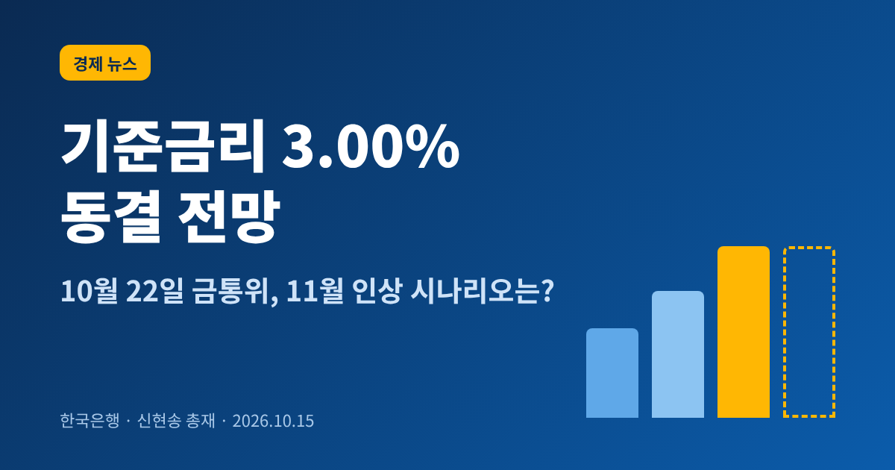
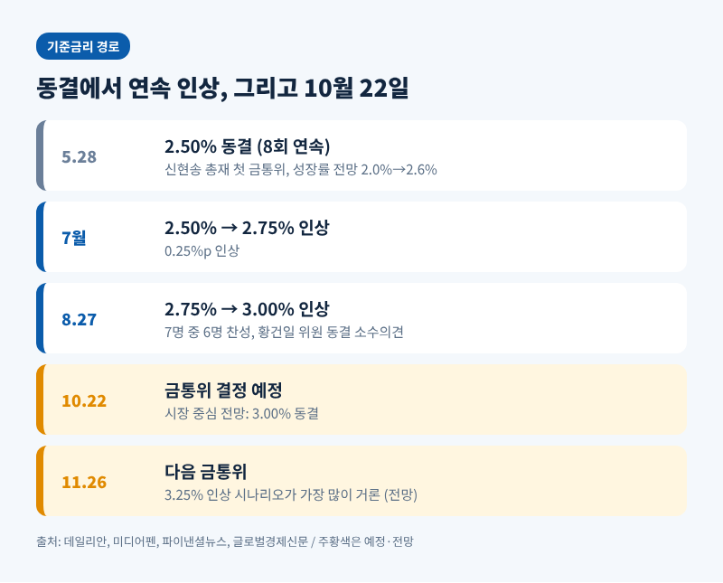
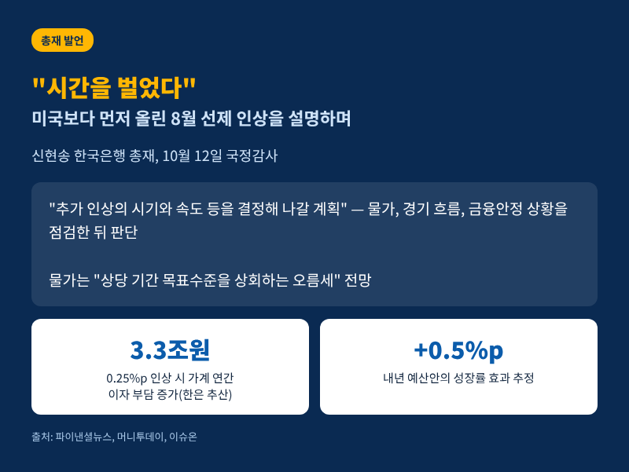
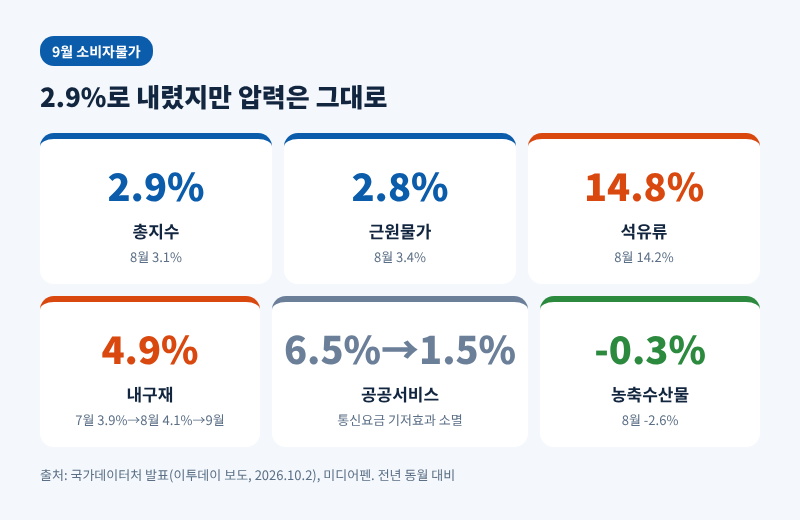
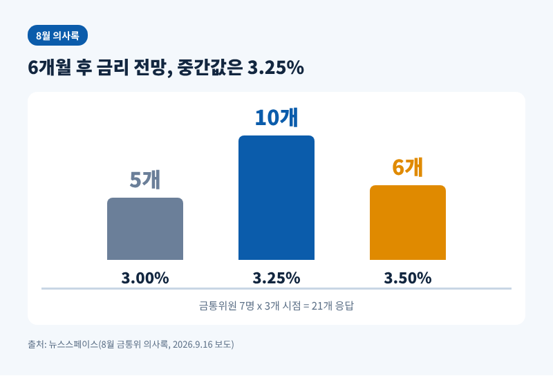
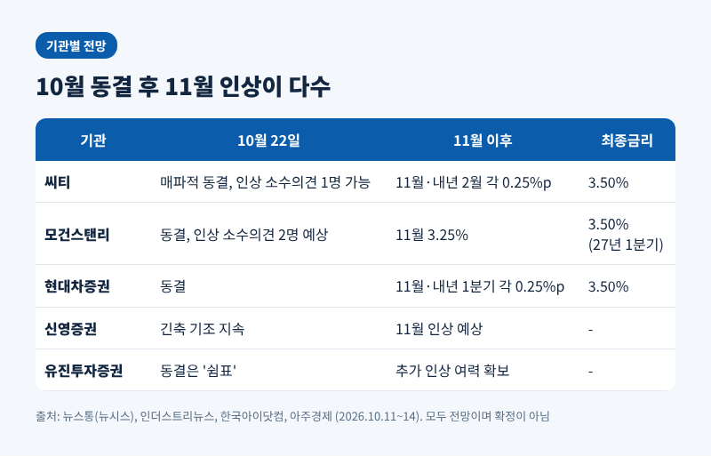

3줄 요약
- 한국은행은 10월 22일 금융통화위원회를 엽니다. 기준금리는 연 3.00%이며, 시장에서는 동결을 가장 유력하게 봅니다.
- 신현송 총재는 10월 12일 국정감사에서 "시간을 벌었다"고 말하면서도 추가 인상의 시기와 속도를 점검하겠다고 밝혔습니다.
- 다수 전문가는 11월 26일 3.25% 인상, 최종금리 3.50%를 예상합니다. 다만 이는 전망일 뿐 확정된 계획이 아닙니다.
한국은행 기준금리 동결 여부를 두고 질문이 많아 이번 글에서는 10월 22일 금통위를 앞둔 상황을 정리해 보겠습니다. 먼저 바로잡을 점이 있습니다. 신현송 총재가 처음 주재한 금통위는 5월 28일 회의였고, 10월 회의는 아직 열리지 않았습니다. 그래서 이 글은 결과 해설이 아니라, 결정 직전의 쟁점과 전망을 짚는 글입니다.
한국은행의 기준금리는 현재 연 3.00%입니다. 7월에 2.50%에서 2.75%로, 8월 27일에 2.75%에서 3.00%로 0.25%포인트씩 두 차례 올렸습니다. 기준금리가 3%대로 올라선 것은 1년 9개월 만입니다.
다음 결정은 10월 22일입니다. 그다음 회의는 11월 26일로 잡혀 있습니다. 시장의 중심 시나리오는 이렇습니다. 10월에는 쉬어 가고, 11월에 3.25%로 한 번 더 올린다는 것입니다.
예전엔 한국은행이 8회 연속 동결(2.50%)을 이어가던 시기였습니다. 지금은 연속 인상 이후 '멈춤이 쉼표인지 종착점인지'를 따지는 국면입니다.

기준금리는 은행 대출금리와 예금금리, 국고채 금리의 출발점입니다. 한국은행 추산으로는 기준금리가 0.25%포인트 오르면 가계의 연간 이자 부담이 약 3조3000억원 늘어납니다. 금리 결정이 가계 살림에 곧바로 닿는 이유입니다.
금리를 올리면 물가는 잡히지만 빚을 진 가계와 중소기업의 부담도 커집니다. 한국은행이 동결과 인상 사이에서 신중해지는 까닭이 여기에 있습니다. 반대로 너무 늦게 움직이면 물가 기대가 굳어질 수 있습니다. 결국 이번 결정은 물가와 금융안정 사이의 균형을 어디에 두느냐의 문제입니다.
신현송 총재는 10월 12일 국회 재정경제기획위원회 국정감사에서 의미 있는 발언을 내놓았습니다. 8월의 선제 인상이 미국 연방준비제도(Fed)의 9월 인상보다 앞섰고, 그 덕분에 시간을 벌었다는 취지입니다. 시장에 쫓겨 나중에 올리면 비용이 훨씬 크다는 설명도 덧붙였습니다.
동시에 총재는 방향을 닫지 않았습니다. 물가가 "상당 기간 목표수준을 상회하는 오름세"를 보일 것으로 내다봤고, 추가 인상은 "물가와 경기 흐름, 금융안정 상황을 면밀히 점검하면서" 시기와 속도를 정하겠다고 했습니다. 세부 내용은 금통위에서 밝히겠다며 말을 아꼈습니다.

이날 국감에서는 통화정책과 재정정책의 조합도 쟁점이 되었습니다. 총재는 정부의 내년 예산안이 성장률을 0.5%포인트, 물가를 0.06%포인트 높일 것으로 추정했습니다. 재정 승수가 상대적으로 낮아 물가 영향은 크지 않을 수 있다는 단서도 달았습니다. 정부 정책에 제동을 걸라는 한 의원의 주문에는 독립적인 통화정책을 "전혀 흔들림 없이" 이어가겠다고 답했습니다. 한편 단일종목 레버리지 ETF의 위험을 충분히 경고하지 못했다며 사과하기도 했습니다.
9월 소비자물가는 전년 동월 대비 2.9% 올랐습니다. 8월의 3.1%보다 낮아져 두 달 만에 2%대로 돌아왔습니다. 식료품과 에너지를 뺀 근원물가도 8월 3.4%에서 9월 2.8%로 내려왔습니다.
겉으로는 진정 신호처럼 보입니다. 그러나 내용을 보면 사정이 다릅니다. 지난해 8월 휴대전화 요금 감면에 따른 기저효과가 사라지면서 공공서비스 물가 상승률이 6.5%에서 1.5%로 떨어졌고, 이것이 전체 수치를 끌어내린 주된 요인이었습니다. 국가데이터처 관계자도 이를 감안하면 "9월의 물가 상승 압력이 8월보다 낮아졌다고 보기는 어렵다"고 설명했습니다.
석유류는 오히려 8월 14.2%에서 9월 14.8%로 상승폭이 커졌습니다. 경유는 20.0%, 휘발유는 11.8% 올랐습니다. 정부가 시행한 석유 최고가격제가 없었다면 9월 상승률은 3.5%였을 것이라는 재정경제부 추정도 있습니다. 반도체 가격의 영향을 받는 내구재 물가도 7월 3.9%, 8월 4.1%, 9월 4.9%로 올랐습니다. 한국은행은 10월에도 3% 내외의 높은 수준을 예상합니다.

9월 15일 공개된 8월 금통위 의사록은 내부 온도 차를 드러냈습니다. 8월 인상은 위원 7명 중 6명이 찬성했고, 황건일 위원이 홀로 동결을 주장했습니다.
다수 의견은 강한 성장과 근원물가 압력이 구조적이므로, 물가 기대가 굳기 전에 선제적으로 대응해야 한다는 것이었습니다. 반면 황 위원은 성장의 상방 위험은 인정하면서도 인상의 부담이 경제 주체마다 고르지 않다고 보았습니다. 시장금리가 이미 높아졌고, 중소기업을 중심으로 연체율이 오르고 있으며, 물가가 4분기부터 둔화할 것이라는 근거였습니다.
앞으로 6개월 기준금리 전망의 중간값은 3.25%였습니다. 위원 7명이 세 시점에 제시한 21개 응답 가운데 10개가 3.25%, 6개가 3.50%, 5개가 3.00%였습니다. 한 차례 추가 인상을 시사하되, 그 이상의 긴축 경로에는 합의가 뚜렷하지 않다는 뜻입니다.

10월 22일 결과를 둘러싼 전망은 대체로 모입니다. 동결 후 11월 인상이라는 시나리오입니다. 다만 소수의견 숫자와 최종금리에서는 기관별로 차이가 있습니다.
씨티는 10월을 '매파적 동결'로 보았습니다. 인상을 주장하는 소수의견이 1명 나올 수 있다고 했고, 11월과 내년 2월에 각각 0.25%포인트를 올려 최종금리 3.50%에 이를 것이라는 기존 전망을 유지했습니다. 모건스탠리는 10월 동결 속에 인상 소수의견이 2명 나올 것으로 보았습니다. 11월 3.25%, 2027년 1분기 3.50%를 예상했습니다.
현대차증권은 10월 동결 후 11월과 내년 1분기에 각각 0.25%포인트 인상해 3.50%에서 긴축을 마친다고 봅니다. 신영증권은 수출 호조와 근원물가, 한은의 선제 대응 의지, 연준의 인상 전환을 근거로 11월을 짚었습니다. 유진투자증권은 이번 동결을 긴축의 끝이 아닌 "쉼표"로 표현했습니다.

최종금리를 두고는 이견도 있습니다. 한 증권사 연구원은 3.75%까지 오른다는 우려는 과도하다고 평가했습니다. 로이터가 집계한 이코노미스트 중간 전망은 2027년 1분기에 한 차례 추가 인상 뒤 연말까지 동결하는 경로였습니다. 같은 3.50% 안팎이라도 시점은 제각각인 셈입니다.
인상 논리만큼 제동 논리도 무겁습니다. 총재는 수도권 집값 상승과 가계부채 증가에 따른 금융불균형 우려가 "여전히 큰 상황"이라고 진단했습니다. 같은 이유로 금리를 올리면 취약 차주의 상환 부담이 커집니다.
모건스탠리는 자영업자 연체율이 저소득층 기준 2021년 1분기 0.67%에서 2026년 1분기 2.13%로, 중간소득층은 1.08%에서 3.64%로 올랐다고 짚었습니다. 중소기업 연체율은 2026년 7월 0.856%로 10년 만에 가장 높았습니다. 반면 같은 보고서는 8월 서비스업 생산 증가율이 4.6%로 개선되는 등 경기 전반은 추가 인상을 감당할 만하다고 평가했습니다.
성장 쪽 신호도 강합니다. 한국은행은 8월 전망에서 올해 성장률을 3.3%, 내년을 2.9%로 높였습니다. 5월 28일에 2.6%로 올렸던 것을 석 달 만에 다시 끌어올린 것입니다. 총재는 올해 2분기 명목 GDP가 전년 동기 대비 26.4% 늘어난 점을 수요 압력의 근거로 들기도 했습니다.
대외 변수는 연준입니다. 연준은 9월에 기준금리를 3.75~4.00%로 올렸고, 10월 27~28일 FOMC가 한은 금통위 바로 뒤에 열립니다. 시장은 10월 동결 가능성을 80%, 12월 인상 가능성을 83% 반영하고 있습니다. 한미 정책 방향이 같은 쪽을 향하고 있다는 점은 한국은행의 부담을 일부 덜어 줍니다. 다만 미국 물가 지표에 따라 이 그림은 달라질 수 있습니다.
정리하면 이번 금통위에서 확인할 대목은 세 가지입니다.
첫째, 표결입니다. 전원 일치 동결인지, 인상 소수의견이 나오는지가 11월 인상의 강도를 가늠하는 단서가 됩니다. 둘째, 통화정책방향 문구입니다. 추가 인상 가능성을 어떤 어조로 남기는지에 따라 시장 금리가 움직일 수 있습니다. 셋째, 새 성장·물가 경로에 대한 총재의 설명입니다. 가계부채와 취약 부문을 어느 정도 비중으로 고려하는지도 함께 드러날 것입니다.
한 가지 분명한 점이 있습니다. 동결이 곧 긴축의 끝은 아니라는 것입니다. 결정이 나오면 표결과 문구, 총재의 발언을 근거로 다시 정리해 보겠습니다.
유의 사항: 이 글은 공개된 보도와 전문가 전망을 정리한 정보 제공용 해설이며, 투자 권유가 아닙니다. 금리·환율·자산 가격과 관련한 판단과 책임은 독자 본인에게 있습니다. 위 전망은 확정된 사실이 아니며 실제 결정과 다를 수 있습니다.
출처: 파이낸셜뉴스·뉴스1(2026-10-12, 10-13), 머니투데이(10-12), 뉴데일리(10-12), 이슈온(10-14), 아주경제(10-13), 미디어펜(10-14), 인더스트리뉴스(10-14), 뉴스통·뉴시스(10-14), 한국아이닷컴(10-11), 데일리안(8-27), 뉴스스페이스(9-16), 글로벌경제신문(5-28), 이투데이(10-2)